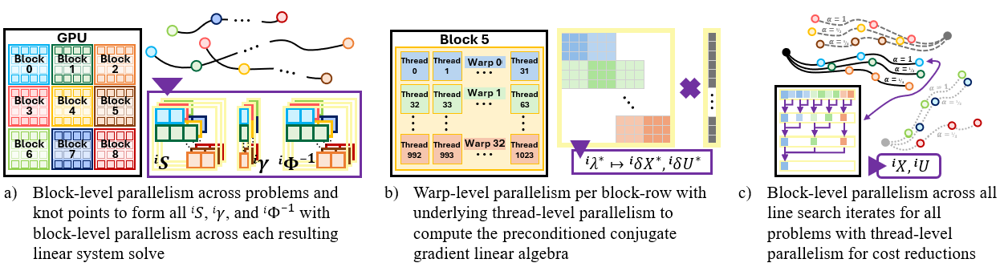
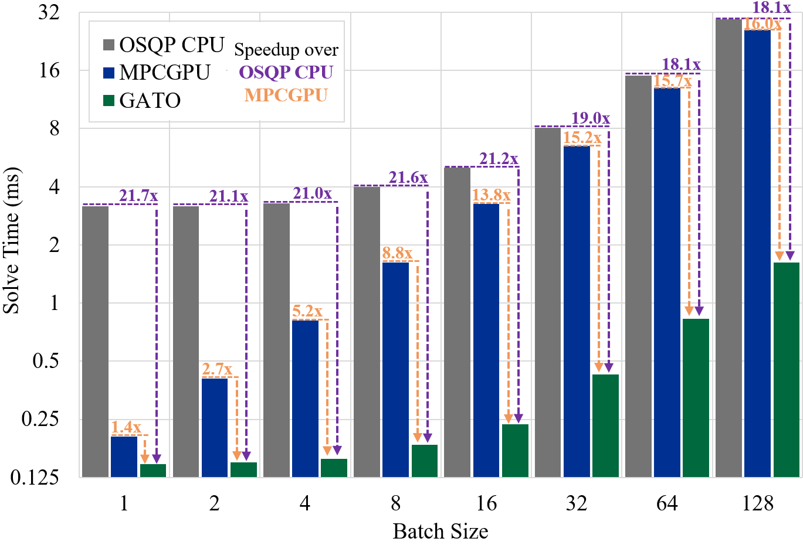
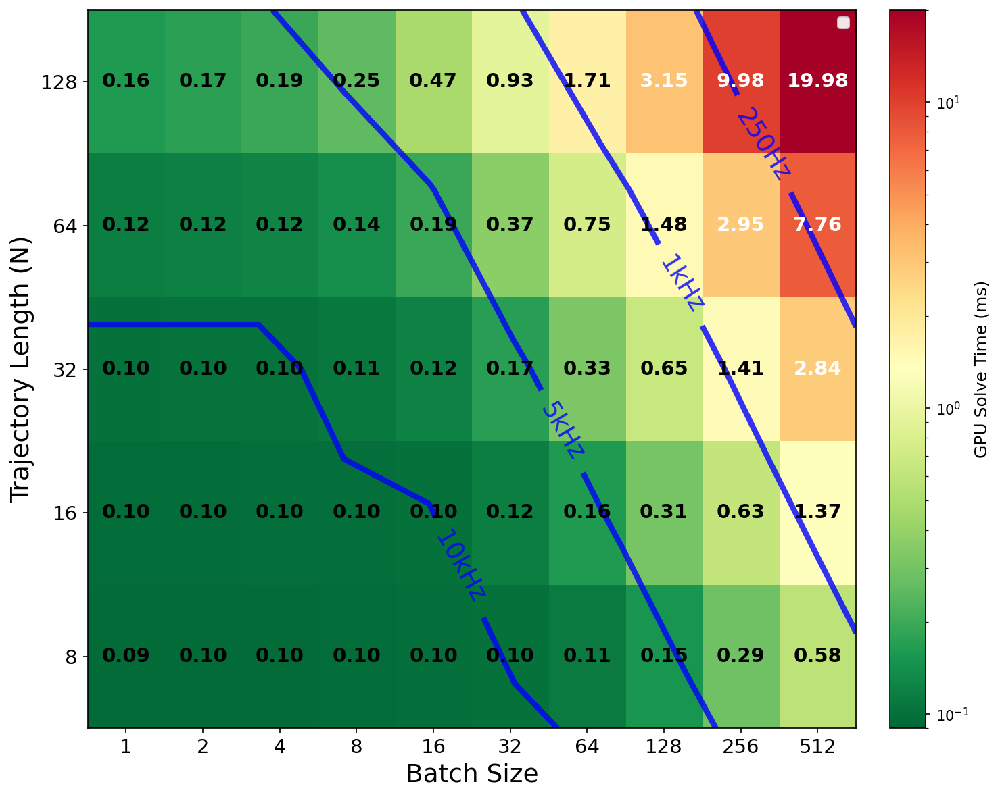
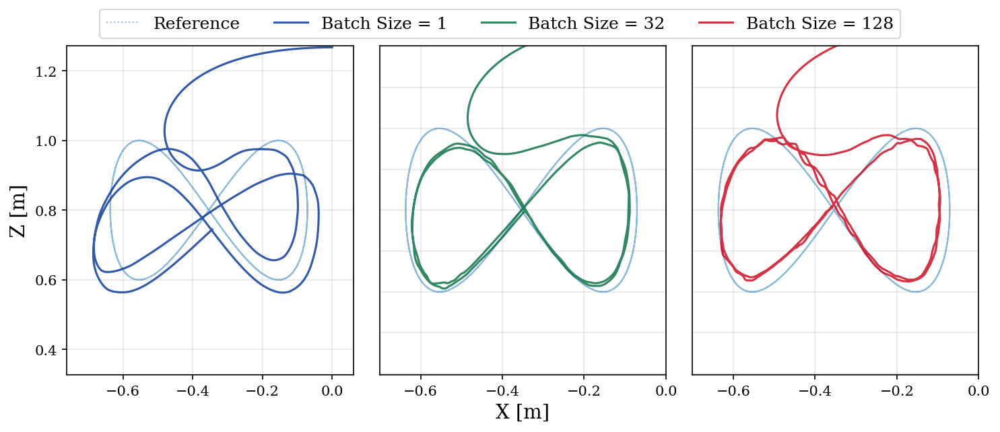
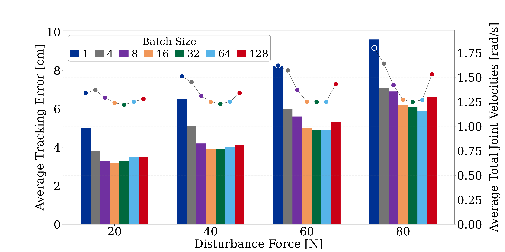
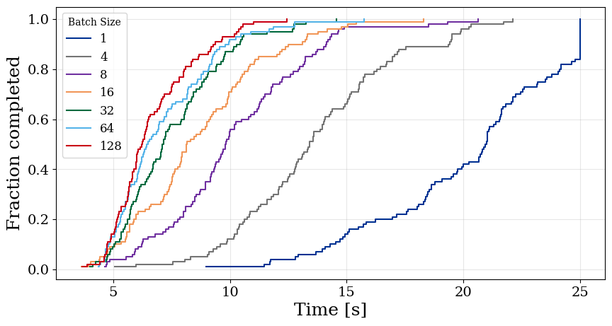
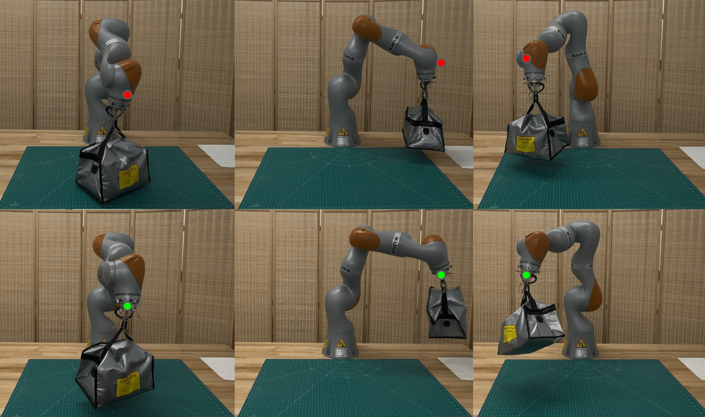
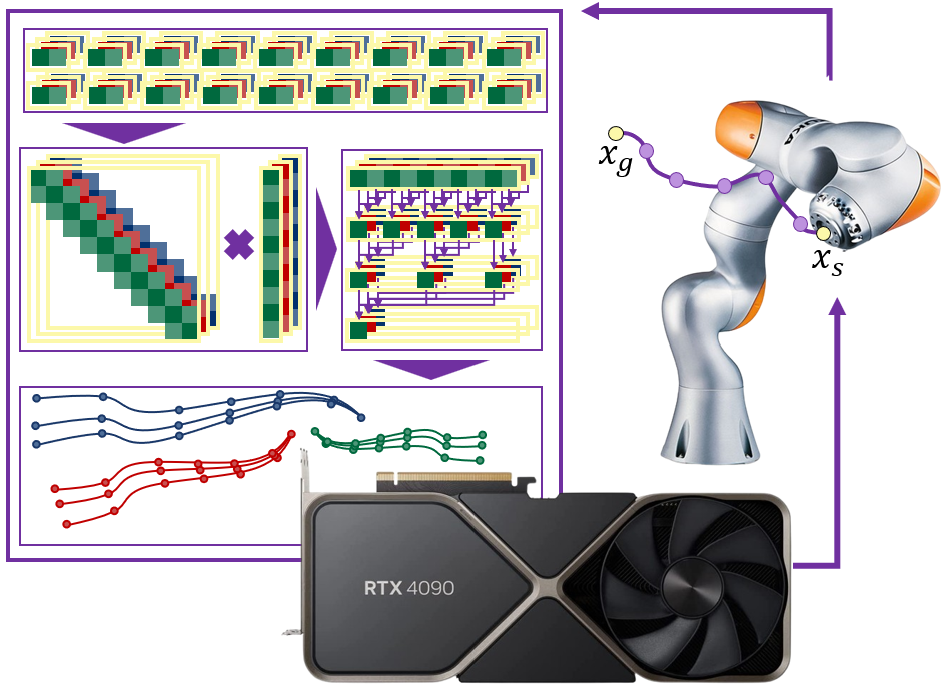

An open source, GPU-accelerated, batched trajectory optimization solver delivering real-time throughput for batched model predictive control.
GATO solves batches of nonlinear trajectory optimization problems using a GPU-accelerated Sequential Quadratic Programming (SQP) approach co-designed across algorithm, software, and hardware. At each SQP iteration, it:
This co-design fills the critical gap between single-solve real-time methods and large-batch offline solvers, enabling scalable edge MPC for manipulation and other robotics applications.



(Left) Solve times for 6-DoF manipulator motions while varying the batch size (M) and underlying solver. N=64 for all solves. GATO shows far improved scalability as compared to state-of-the-art CPU and GPU solutions. (Right) A heat map of solve times while varying both batch size (M) and time horizon (N). GATO is able to reach kHz control rates for real-time iterations of large batches (512) of short horizon (N=8) trajectories, as well as smaller batches (32) of longer horizon trajectories (N=128), showing the flexibility of the design.


Figure-8 tracking task, with an external disturbance applied at the end effector. (Left) Bar chart shows tracking error, scatter plot shows average total joint velocities. Increasing GATO's batch size enables increased disturbance rejection, lowering tracking error and joint velocities until the increased latency from a larger batch size outweighs the optimality gains. (Right) End-effector trajectories realized during this experiment when 50N of external force is applied at the end effector, again showing that modest batch sizes lead to the best performance.


(Left) Cumulative density function of the solve times for a trajectory length N=16 for GATO across different batch sizes and varied pendulum configurations. For each batch size, the solver accounts for 100 disturbance scenarios. We see how larger batch sizes enable more accurate unmodeled disturbance rejection. (Right) Hardware experiment showing the solver successfully (M=32) and unsuccessfully (M=1) accounting for the time-varying unmodeled disturbance and reach the targets.
GATO ships with plant models for two robot arms. Additional systems can be added by implementing
_plant.cuh and _grid.cuh (see gato/dynamics/).
| Robot | DOF | Notes |
|---|---|---|
| KUKA iiwa14 | 7 | Industrial manipulator; grid dynamics pre-generated via GRiD |
| Neubrex Indy7 | 6 | Collaborative robot; grid dynamics pre-generated via GRiD |
Configurable horizon lengths: 8, 16, 32, 64, 128 knot points (set via -DKNOTS at build time).
git clone https://github.com/A2R-Lab/GATO.git cd GATO ./tools/install.sh # install Docker and uv ./tools/docker.sh # build image and enter container
./tools/build.sh # default: iiwa14 + indy7, knots 8/32/128
mkdir -p build && cd build cmake -DPLANT="iiwa14" -DKNOTS="16;64" .. cmake --build . --parallel
Built Python extension modules are written to python/bsqp/ as bsqpN{N}_{plant}.so.
See examples/ for Jupyter notebooks demonstrating MPC with GATO.
@inproceedings{du2026gato,
title={GATO: GPU-Accelerated and Batched Trajectory Optimization for Scalable Edge Model Predictive Control},
author={Alexander Du and Emre Adabag and Gabriel Bravo and Brian Plancher},
booktitle={IEEE International Conference on Robotics and Automation (ICRA)},
year={2026},
month={June}
}
